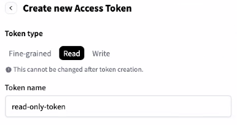

Pre-requisites for Deploying NAI
In this part of the lab we will prepare pre-requisites for LLM application on GPU nodes.
The following is the flow of the applications lab:
stateDiagram-v2
direction LR
state PreRequisites {
[*] --> CreateFilesShare
CreateFilesShare --> PrepareHuggingFace
PrepareHuggingFace --> [*]
}
state CreateOfflineBundle {
[*] --> PrepareNAIHelmCharts
PrepareNAIHelmCharts --> PrepareNAIContainerImages
PrepareNAIContainerImages --> [*]
}
[*] --> PreRequisites
PreRequisites --> CreateOfflineBundle
CreateOfflineBundle --> DeployNAI : next section
DeployNAI --> TestNAI
TestNAI --> [*]Prepare the following pre-requisites needed to deploy NAI on target kubernetes cluster.
Create Nutanix Files Storage Class
We will create Nutanix Files storage class which will be used to create a pvc that will store the LLama-3-8B model files.
- In Prism Central, choose Files from the menu
- Choose the file server (e.g. labFS)
- Click on Shares & Exports
- Click on +New Share or Export
-
Fill the details of the Share
- Name - model_share
- Description - for NAI model store
- Share path - leave blank
- Max Size - 10 GiB (adjust to the model file size)
- Primary Protocol Access - NFS
-
Click Next and make sure Enable compression in checked
- Click Next
-
In NFS Protocol Access, choose the following:
- Authentication - System
- Default Access (for all clients) - Read-Write
- Squash - Root Squash
Note
Consider changing access options for Production environment
-
Click Next
- Confirm the share details and click on Create
Create the Files Storage Class
-
Run the following command to check K8S status of the
nkpdevcluster -
In VSC Explorer, click on New File and create a config file with the following name:
Add the following content and replace the
nfsServerNamewith the name of the Nutanix Files server name .
-
Create the storage class
-
Check storage classes in the cluster for the Nutanix Files storage class
kubectl get storageclass NAME PROVISIONER RECLAIMPOLICY VOLUMEBINDINGMODE ALLOWVOLUMEEXPANSION AGE dkp-object-store kommander.ceph.rook.io/bucket Delete Immediate false 28h nai-nfs-storage csi.nutanix.com Delete Immediate true 24h nutanix-volume (default) csi.nutanix.com Delete WaitForFirstConsumer false 28h
Request Access to Model on Hugging Face
Follow these steps to request access to the meta-llama/Meta-Llama-3.1-8B-Instruct model:
LLM Recommendation
From testing google/gemma-2-2b-it model is quicker to download and obtain download rights, than meta-llama/Meta-Llama-3.1-8B-Instruct model.
Feel free to use the google/gemma-2-2b-it model if necessary. The procedure to request access to the model is the same.
-
Sign in to your Hugging Face account:
- Visit Hugging Face and log in to your account.
-
Navigate to the model page:
- Go to the Meta-Llama-3.1-8B-Instruct model page.
-
Request access:
- On the model page, you will see a section or button labeled Request Access (this is usually near the top of the page or near the "Files and versions" section).
- Click Request Access.
-
Complete the form:
- You may be prompted to fill out a form or provide additional details about your intended use of the model.
- Complete the required fields and submit the request.
-
Wait for approval:
- After submitting your request, you will receive a notification or email once your access is granted.
- This process can take some time depending on the approval workflow.
Once access is granted, there will be an email notification.
Note
Email from Hugging Face can take a few minutes or hours before it arrives.
Create a Hugging Face Token with Read Permissions
Follow these steps to create a Hugging Face token with read permissions:
-
Sign in to your Hugging Face account:
- Visit Hugging Face and log in to your account.
-
Access your account settings:
- Click on your profile picture in the top-right corner.
- From the dropdown, select Settings.
-
Navigate to the "Access Tokens" section:
- In the sidebar, click on Access Tokens.
- You will see a page where you can create and manage tokens.
-
Create a new token:
- Click the New token button.
- Enter a name for your token (i.e.,
read-only-token).
-
Set token permissions:
- Under the permissions dropdown, select Read. For Example: 
-
Create and copy the token:
- After selecting the permissions, click Create.
- Your token will be generated and displayed only once, so make sure to copy it and store it securely.
Use this token for accessing Hugging Face resources with read-only permissions.
Prepare Helm Charts and Generate Bundle
- Login to the Jumphost VM
- In VSC Explorer, click on New Folder and name it:
airgap-nai -
In
VSC, under the newly createdairgap-naifolder, click on New File and create file with the following name: -
Add (append) the following environment variables and save it
export ISTIO_VERSION=_your_istio_version export KNATIVE_VERSION=_your_knative_version export KSERVE_VERSION=_your_kserve_version export KUBE_PROMETHEUS_STACK_VERSION=_your_kube_prometheus_stack_version export NAI_CORE_VERSION=_your_nai_core_version export NAI_API_VERSION=_your_nai_api_version export NAI_PROMETHEUS_VERSION=_your_nai_prometheus_version export NAI_POSTGRESQL_VERSION=_your_nai_postgresql_version export NAI_KSERVE_HF_SERVER_VERSION=_your_nai_kserve_hf_server_version export NAI_TGI_RUNTIME_VERSION=_your_nai_tgi_runtime_versionexport ISTIO_VERSION=1.20.8 export KNATIVE_VERSION=1.13.1 export KSERVE_VERSION=v0.14.0 export KUBE_PROMETHEUS_STACK_VERSION=61.3.1 export NAI_CORE_VERSION=v2.0.0 export NAI_API_VERSION=v2.0.0 export NAI_PROMETHEUS_VERSION=v2.54.0 export NAI_POSTGRESQL_VERSION=16.1-alpine export NAI_KSERVE_HF_SERVER_VERSION=v0.14.0 export NAI_TGI_RUNTIME_VERSION=2.3.1-825f39d -
Create a new directory to store the custom helm charts
-
Fetch the helm charts using the following commands
helm fetch base --repo https://istio-release.storage.googleapis.com/charts --version=${ISTIO_VERSION} helm fetch istiod --repo https://istio-release.storage.googleapis.com/charts --version=${ISTIO_VERSION} helm fetch gateway --repo https://istio-release.storage.googleapis.com/charts --version=${ISTIO_VERSION} helm fetch nai-knative-serving-crds --repo https://nutanix.github.io/helm-releases --version=${KNATIVE_VERSION} helm fetch nai-knative-serving --repo https://nutanix.github.io/helm-releases --version=${KNATIVE_VERSION} helm fetch nai-knative-istio-controller --repo https://nutanix.github.io/helm-releases --version=${KNATIVE_VERSION} helm fetch oci://ghcr.io/kserve/charts/kserve-crd --version=${KSERVE_VERSION} helm fetch oci://ghcr.io/kserve/charts/kserve --version=${KSERVE_VERSION} helm fetch nai-core --repo https://nutanix.github.io/helm-releases --version=${NAI_CORE_VERSION} -
Create a tar ball of the helm charts and compress it
-
Upload the helm charts to ChartMuseum instance deployed automatically by Kommander. This will make this consistent with other NKP catalog items and will work seamlessly when this is converted to a catalog item.
Prepare NAI Container Images
The Jumphost VM will be used as a medium to download the NAI container images and upload them to the internal Harbor container registry.
stateDiagram-v2
direction LR
state LoginToNutanixPortal {
[*] --> CreateDockerIDandAccessToken
CreateDockerIDandAccessToken --> LoginToDockerCLI
LoginToDockerCLI --> [*]
}
state PrepareNAIDockerImages {
[*] --> DownloadUploadImagesToHarbor
DownloadUploadImagesToHarbor --> [*]
}
[*] --> LoginToNutanixPortal
LoginToNutanixPortal --> PrepareNAIDockerImages
PrepareNAIDockerImages --> [*]Prepare NAI Docker Download Credentials
All NAI Docker images will be downloaded from the public Docker Hub registry. In order to download the images, you will need to logon to Nutanix Portal - NAI and create a Docker ID and access token.
- Login to Nutanix Portal - NAI using your credentials
- Click on Generate Access Token option
- Copy the generated Docker ID and access token
-
Login to the Docker CLI on your jumphost VM
Warning
Currently there are issues with the Nutanix Portal to create a Docker ID and access token. This will be fixed soon.
Click on the Manage Access Token option and use the credentials listed there until the Nutanix Portal is fixed.
Upload NAI Docker Images to Harbor
Info
The download and upload of the container images will be done in one nkp command which will use the internal Harbor container registry details.
nkp command will do this in a three-step process.
- Download the container images to the jumphost VM
- Create a tar ball of the container images and
- Upload it to the internal Harbor container registry
-
Create images yaml file for all the required container images
-
Change to
$HOME/airgap-naidirectory if you are not already there -
In VSC Explorer, click on New File and create file with the following name:
with the following content:
docker.io/istio/proxyv2:1.20.8 docker.io/istio/pilot:1.20.8 docker.io/library/busybox:1.28 k8s.gcr.io/cuda-vector-add:v0.1 gcr.io/knative-releases/knative.dev/serving/cmd/activator:v1.13.1 gcr.io/knative-releases/knative.dev/serving/cmd/autoscaler:v1.13.1 gcr.io/knative-releases/knative.dev/serving/cmd/controller:v1.13.1 gcr.io/knative-releases/knative.dev/serving/cmd/webhook:v1.13.1 gcr.io/knative-releases/knative.dev/serving/cmd/queue:v1.13.1 gcr.io/knative-releases/knative.dev/net-istio/cmd/controller:v1.13.1 gcr.io/knative-releases/knative.dev/net-istio/cmd/webhook:v1.13.1 ghcr.io/mesosphere/dkp-container-images/nvcr.io/nvidia/cloud-native/gpu-operator-validator:v24.3.0-d2iq.0 ghcr.io/mesosphere/dkp-container-images/nvcr.io/nvidia/k8s-device-plugin:v0.15.0-ubi8-d2iq.0 harbor.infrastructure.cloudnative.nvdlab.net/nvidia/driver:535.161.08-ubuntu22.04 nvcr.io/nvidia/cloud-native/dcgm:3.3.5-1-ubuntu22.04 nvcr.io/nvidia/cloud-native/k8s-driver-manager:v0.6.8 nvcr.io/nvidia/k8s-device-plugin:v0.15.0-ubi8 nvcr.io/nvidia/k8s/container-toolkit:v1.15.0-ubuntu20.04 nvcr.io/nvidia/k8s/dcgm-exporter:3.3.5-3.4.1-ubuntu22.04 gcr.io/kubebuilder/kube-rbac-proxy:v0.13.1 docker.io/kserve/kserve-controller:v0.13.1 docker.io/kserve/modelmesh-controller:v0.12.0-rc0 -
In VSC Explorer, click on New File and create file with the following name:
with the following content:
docker.io/nutanix/nai-iep-operator:v2.0.0 docker.io/nutanix/nai-model-processor:v2.0.0 docker.io/nutanix/nai-inference-ui:v2.0.0 docker.io/nutanix/nai-api:v2.0.0 docker.io/nutanix/nai-postgres:16.1-alpine docker.io/nutanix/nai-kserve-controller:v0.13.1 nutanix/nai-kserve-huggingfaceserver:v0.13.1 nutanix/nai-tgi:2.3.1-825f39d quay.io/karbon/prometheus:v2.41.0 quay.io/prometheus-operator/prometheus-config-reloader:v0.74.0 -
Create image bundle with the following command
-
Since we will be using the same internal Harbor container registry to upload container images, make sure the following environment variables are set (these were already set during air-gap NKP preparation)
-
Push the images to the internal Harbor container registry
Now we are ready to deploy our AI workloads.